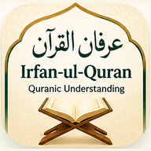

Verse-by-Verse Learning
Understand complete Qur'anic Ayat with Urdu and English meanings.
بِسْمِ اللّٰهِ الرَّحْمٰنِ الرَّحِيْمِ
اللَّهُمَّ صَلِّ عَلَىٰ سَيِّدِنَا مُحَمَّدٍ وَعَلَىٰ آلِ سَيِّدِنَا مُحَمَّدٍ وَبَارِكْ وَسَلِّمْ
Install on mobile, tablet, or laptop for quick access.
QUR’ANIC VERSE-BY-VERSE LEARNING
Understand Each Ayat. Explore Its Meaning. Strengthen Your Qur'anic Learning.
Discover a structured way to understand each Qur'anic verse through the Urdu and English translations of Irfan-ul-Quran by Shaykh-ul-Islam Professor Dr. Muhammad Tahir-ul-Qadri.
Learn through interactive flashcards, practise with multiple-choice questions, and build your understanding one Ayat at a time.
Understand Qur'anic verses through Urdu & English translations, interactive flashcards, and MCQ practice.

YOUR QUR'AN LEARNING COMPANION
Install our free Verse-by-Verse Learning app for quick home-screen access. Your familiar Ayat practice and translations stay the same.
Understand complete Qur'anic Ayat with Urdu and English meanings.
Learn and revise through interactive study cards.
Practice the meanings of complete Qur'anic verses.
Study one Qur'anic section at a time.
LEARN & PRACTICE
Select one of the 30 Paras of the Holy Qur'an and explore its four learning sections. Each section is designed to make Ayat-by-Ayat practice more manageable and help you develop confidence through regular learning.
30 Paras · 4 Sections per Para · 120 Learning Sections
CHOOSE YOUR TRANSLATION
Select one of the 30 Paras, then choose its learning section.
YOUR LEARNING WORKSPACE
Choose a range or question group, then study with MCQs or classic flashcards.
Automatically loaded from your chosen quarter
Select question numbers from your chosen section
LIVE PREVIEW
Changing mode starts a fresh attempt.
↻ Tap the card or press Space to flip
DOWNLOAD YOUR STUDY DECK
Generate a deck first to enable downloadable formats.
HOW IT WORKS
Choose your preferred Para and one of its four Qur'anic learning sections.
Open your chosen section and select a question group to begin practising.
Understand complete Arabic Ayat through your chosen Urdu and English translations.
Use MCQ practice and Test Mode to assess what you have learned.
LEARN YOUR WAY
Practise Qur'anic vocabulary with immediate feedback and improve your understanding step by step.
Challenge yourself to recognise Arabic vocabulary and evaluate your learning through structured questions.
Every vocabulary entry includes its Qur'anic location, making it easier to identify the original verse.
Reference: P01-S001-1
Urdu-English Meaning: سب تعریفیں - All praise
This reference identifies Para 01, Surah 001, Ayat 1.PRIVACY
No login is needed. Learning takes place in your browser; no DeTLeng account or study-results database is used. Your current practice progress stays on this page while your session is open.
Public hosting providers may process ordinary web request data. Session progress may reset when you close or refresh the page.
ABOUT THIS LEARNING INITIATIVE
This platform is an independent educational initiative by DeTLeng, drawing on the Urdu and English translations of Irfan-ul-Quran by Shaykh-ul-Islam Professor Dr. Muhammad Tahir-ul-Qadri.
The vocabulary alignments and interactive activities are designed as learning aids and do not replace the complete Qur'anic translations or their original context.
Discover More — About Irfan-ul-Quran →Build familiarity with Qur'anic Arabic vocabulary through consistent practice, meaningful revision, and accessible learning tools.
LEARNING MOTIVATION · سیکھنے کا حوصلہ
Read with Attention. Understand with Sincerity. Practise with Consistency.
ہر آیت، فہمِ قرآن کی جانب ایک قدم
قرآنِ مجید کی ہر آیت اپنے اندر رہنمائی اور غور و فکر کا پیغام رکھتی ہے۔ جب آپ ایک آیت کو اس کے معنی کے ساتھ سمجھنے کی کوشش کرتے ہیں تو قرآنِ پاک سے آپ کا تعلق مزید گہرا ہو سکتا ہے۔
ضروری نہیں کہ آپ ایک ہی دن میں بہت سی آیات یاد کر لیں۔ ایک آیت سے آغاز کیجیے، اس کا مفہوم سمجھیے اور فرصت کے مطابق اس کی مشق کیجیے۔ سیکھنے کا خوبصورت سفر آہستہ آہستہ آگے بڑھتا ہے۔
ہر آیت کو محبت، توجہ اور سمجھنے کی خواہش کے ساتھ پڑھیے۔
فلیش کارڈز اور سوالات سے اپنی سمجھ آزمائیے۔ غلطی ہو تو اسے سیکھنے کا موقع سمجھیے۔
روزانہ چند منٹ کی مشق بھی آیات کے معانی سمجھنے میں مدد دے سکتی ہے۔
جب کوئی سیکھی ہوئی آیت تلاوت میں آئے تو اس کے پیغام پر ایک لمحہ غور کیجیے۔
اہم بات یہ نہیں کہ آپ کتنی تیزی سے آگے بڑھتے ہیں، بلکہ یہ ہے کہ آپ کتنے خلوص اور مستقل مزاجی سے سیکھتے رہتے ہیں۔
ایک آیت پڑھیے۔ ایک مفہوم سمجھیے۔ فہمِ قرآن کی جانب ایک قدم بڑھائیے۔
Understanding the Holy Qur'an is a meaningful journey of learning, reflection, and consistency. Every verse you explore in its full context offers another opportunity to reflect on the message you recite.
You do not need to learn everything in one day. Begin with one Ayat, explore its meaning, practise recalling it, and return whenever you are ready.
Read each verse with curiosity, sincerity, and a desire to understand.
Use interactive flashcards and multiple-choice questions to build recall. Every mistake is a chance to learn.
A few focused minutes each day can make verse-by-verse learning more familiar.
When a familiar Ayat comes up in recitation, pause to consider its meaning.
Every learner starts somewhere. What matters is not how quickly you finish, but how sincerely and consistently you continue.
One Ayat Read. One Meaning Understood. One Step Forward.